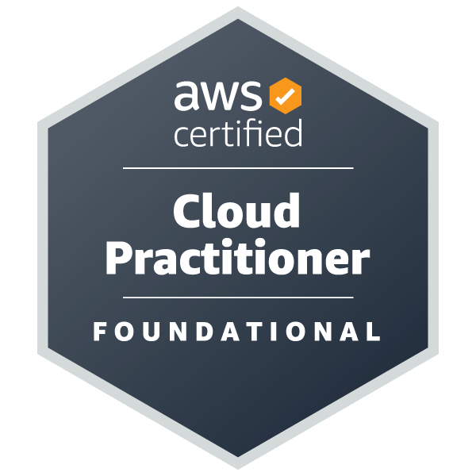
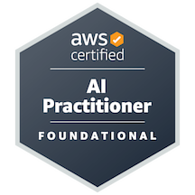
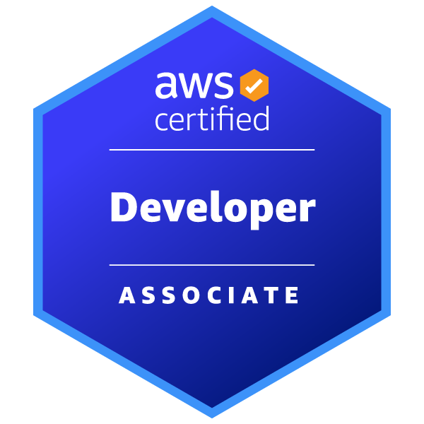
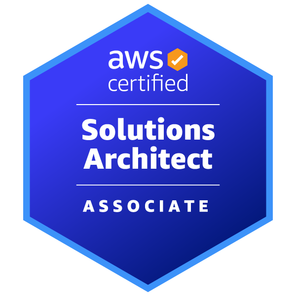

Profissional certificado AWS (4x), com foco em Cloud Computing, Infraestrutura como Código (Terraform) e automação com Inteligência Artificial Generativa. Aplico esses conhecimentos em projetos práticos de automação e arquiteturas modernas baseadas em eventos, além de redes seguras provisionadas como código, sempre com boas práticas de segurança e deploy automatizado.
Com mais de 15 anos liderando equipes e operações — da coordenação de obras à direção geral de uma empresa — hoje aplico essa mesma capacidade de planejamento e execução na construção de infraestrutura em nuvem.

AWS Cloud Practitioner
AWS AI Practitioner
AWS Developer Associate
AWS Solutions ArchitectPlataforma serverless usada por turmas reais de mentoria para a certificação AWS Cloud Practitioner. Fotos de provas enviadas ao S3 passam por SQS + DLQ até uma Lambda que usa Claude no Amazon Bedrock para OCR e estruturação em JSON, alimentando um banco de questões no DynamoDB. Os alunos fazem diagnóstico, prática por tema e exame final de 65 questões via API Gateway com autenticação Cognito (JWT) e frontend no Amplify. Infraestrutura 100% Terraform com CI/CD no GitHub Actions via OIDC.
Ver repositórioEste site (o que você está vendo agora) roda sobre Amazon S3 com Static Website Hosting, provisionado via Terraform. Base de IAM e controle de acesso que depois reutilizei em projetos com IA generativa.
Ver repositórioArquitetura orientada a eventos: upload de imagem no S3 aciona uma Lambda que usa Amazon Rekognition, salva resultados no DynamoDB e envia alertas via SNS.
Ver repositórioPipeline serverless que converte PDFs em audiolivros, alternando entre Amazon Polly e ElevenLabs. Infraestrutura 100% em Terraform, com fila SQS + DLQ e FinOps.
Ver repositórioProjeto em equipe com agente Strands em Lambda: extrai texto com Textract, classifica e resume com Bedrock. Meu papel: arquitetura e infraestrutura AWS completa.
Ver repositórioEstou aberto a oportunidades como Cloud/DevOps Engineer Jr. Fale comigo.